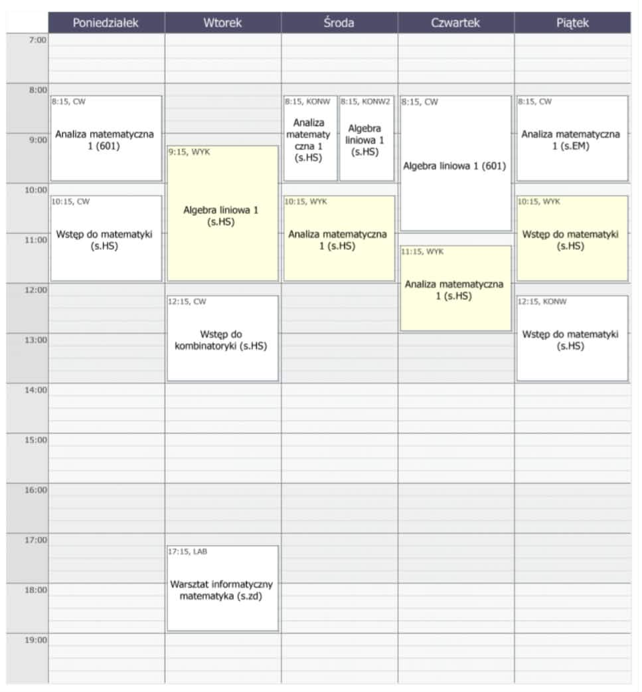
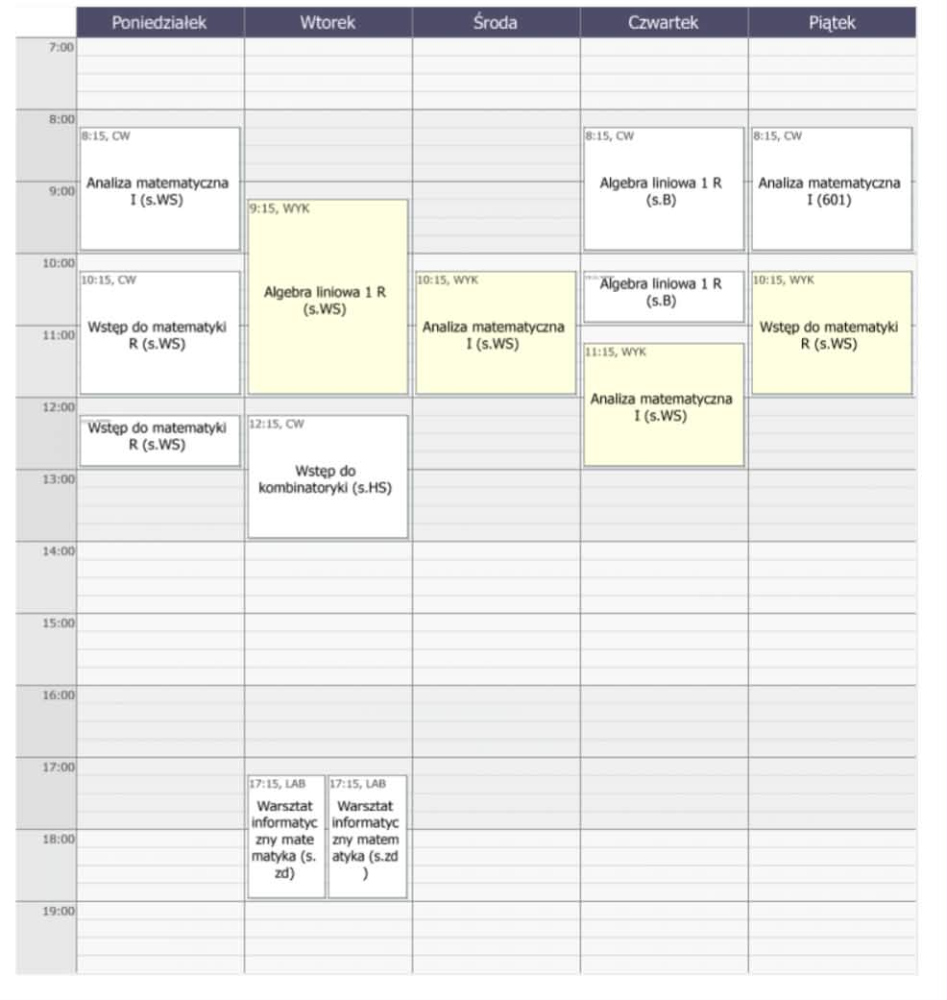

Dodatkowe Informacje
Zbiór przydatnych linków, ciekawostek i luźnych informacji.
Prawdopodobne plany zajęć
Pamiętajcie, że do startu zajęć jeszcze długa droga i plan może ulec zmianie (btw warsztat informatyczny odbywa się zdalnie)
Kurs podstawowy

Kurs rozszerzony

Lista specjalności
Przydatne linki
Strona dr. Jarosława Wróblewskiego
W zakładkach Analiza matematyczna 1 (AM-1) na samym dole znajdują się testy kwalifikacyjne z zeszłych lat. Przy okazji możecie pooglądać stare kolosy.
Poradnik Dawida
Poradnik dla pierwszaków od naszego absolwenta.
Poradnik dr. Jana Kraszewskiego
Poradnik dla pierwszaków od dr. Jana Kraszewskiego.
FB Samorządu (WRSS WMI)
Obowiązkowy like. (Przeprowadzamy kontrole, brak like skutkuje uwagą do dzienniczka i wezwaniem rodziców)
Instagram Samorządu
Obowiązkowy follow. W razie kontroli jak wyżej.
Instytut Matematyczny UWr na FB
Strona na FB naszego instytutu.
Masz więcej pytań?
Śmiało możesz się do nas odezwać na instagramie WRSS lub na grupce twojego roku na messengerze.
made by Wiktor Mencel for pierwszakis <3